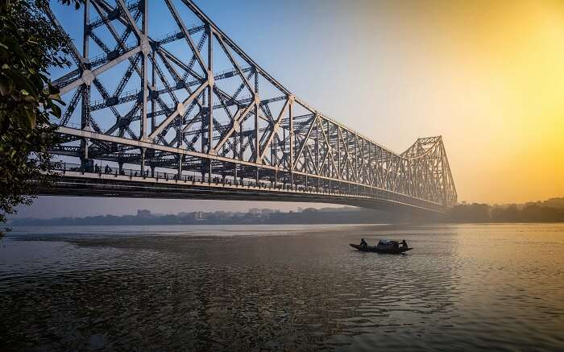

Howrah Bridge

Location: Jagganath Ghat, 1, Strand Road, Kolkata
Timings: NA
Entry Fee: Free entry
The Howrah Bridge is a balanced cantilever bridge over the Hooghly River in West Bengal, India.
Commissioned in 1943,the bridge was originally named the New Howrah Bridge, because it replaced a
pontoon bridge at the same location linking the cities of Howrah and Kolkata (Calcutta). On 14 June
1965, it was renamed Rabindra Setu after the great Bengali poet Rabindranath Tagore, who was the first
Indian and Asian Nobel laureate.It is still popularly known as the Howrah Bridge.
The bridge is one of four on the Hooghly River and is a famous symbol of Kolkata and West Bengal.
The other bridges are the Vidyasagar Setu (popularly called the Second Hooghly Bridge), the Vivekananda
Setu and the relatively new Nivedita Setu. It weathers the storms of the Bay of Bengal region,
carrying a daily traffic of approximately 100,000 vehicles and possibly more than 150,000 pedestrians,
easily making it the busiest cantilever bridge in the world.The third-longest cantilever bridge at
the time of its construction,the Howrah Bridge is currently the sixth-longest bridge of
its type in the world.
Cultural signifance
The bridge has been shown in numerous films, such as Bimal Roy's 1953 film Do Bigha Zamin, Ritwik Ghatak's
Bari Theke Paliye in 1958, Satyajit Ray's Parash Pathar in the same year, Mrinal Sen's Neel Akasher Neechey
in 1959, Shakti Samanta's Howrah Bridge (1958), that featured the famous song Mera Naam Chin Chin Chu and
China Town (1962) and Amar Prem (1971), Amar Jeet's 1965 Teen Devian in 1965, Mrinal Sen's 1972 National
Award winning Bengali film Calcutta 71 and Sen's Calcutta Trilogy its sequel in 1973, Padatik, Richard
Attenborough's 1982 Academy Award winning film Gandhi, Goutam Ghose's 1984 Hindi film Paar, Raj Kapoor's
Ram Teri Ganga Maili in 1985, Nicolas Klotz's The Bengali Night in 1988, Roland Joffé's English language
film City of Joy in 1992, Florian Gallenberger's Bengali film Shadows of Time in 2004, Mani Ratnam's
Bollywood film Yuva in 2004, Pradeep Sarkar's 2005 Bollywood film Parineeta, Subhrajit Mitra's 2008 Bengali
film Mon Amour: Shesher Kobita Revisited, Mira Nair's 2006 film The Namesake, Blessy's 2008 Malayalam
Film Calcutta News, Surya Sivakumar's 2009 Tamil film Aadhavan, Imtiaz Ali's 2009 Hindi film
Love Aaj Kal, Abhik Mukhopadhyay's 2010 Bengali film Ekti Tarar Khonje, Sujoy Ghosh's 2012 Bollywood
film Kahaani, Anurag Basu's 2012 Hindi film Barfi!, Riingo Banerjee's 2012 Bengali film Na Hannyate,
Rana Basu's 2013 Bengali film Namte Namte, and Ali Abbas Zafar's 2014 Hindi film Gunday and the 2015
YRF release from director Dibakar Banerjee's Detective Byomkesh Bakshy!. Shoojit sircar's "Piku" also
features some scenes on this iconic bridge. The bridge was also featured in Garth Davis' Academy
Award-nominated 2016 film Lion.